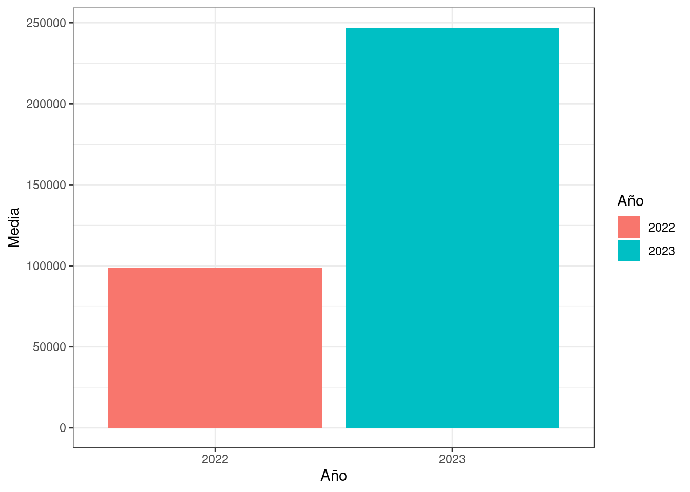

| Año | Media |
|---|---|
| 2022 | 99000 |
| 2023 | 247000 |
Diferencias en el ITF entre el 2022 y el 2024
Un estudio de ejemplo
Introducción
En presente trabajo es un ejemplo de publicar un análisis de datos basado en datos del INDEC (Censos y estadísticas 2024).
Datos
Los datos que hemos usado para este análisis provienen del indec. Corresponden a la encuesta permanente de hogares para el 4to trimestre del 2022 y 2023.
Preguntas de investigación
El propósito de esta investigación es dar cuenta de diferencias en el Ingreso Total Familar (ITF) en el laspo de tiempo en cuestión.
Herramientas de análisis
Usamos el lenguaje R (2024) con los paquetes de tidyverse. (Wickham et al. 2019). Usamos el sistema Quarto Allaire et al. (2024).
Procedimiento
Cargamos los datos y los limpiamos eliminando archivos de código de identificación duplicado.
Análisis descriptivo
Como se aprecia en la Tabla 1 hay una importante diferencia en el ITF nominal entre los dos años. Lo mismo se aprecia de la Figura 1

Análisis inferencial
Usamos el test de t de Student para Shier (2004) los resultados se ven en la Tabla 2.
| estimate | statistic | p.value | parameter | conf.low | conf.high | method | alternative |
|---|---|---|---|---|---|---|---|
| 187146.2 | 48.95632 | 0 | 6998 | 179652.5 | 194639.9 | Paired t-test | two.sided |
El valor de t es 48.9563229, el valor p<.00001, con un estimado de 187146.1694528 de diferencia entre los años de análisis. Dados estos valores rechazamos la hipótesis nula de falta de diferencia entre los dos años y nos quedamos con la hipótesis alternativa de que el ITF es superior en el 2023.
Limitaciones
La principal limitación de este estudio es que informan diferencias con valores absolutos y sin tomar en cuenta la inflación que obró entre 2022 y 2023. Por ello es imposible saber si hubo deterioro o mejora en el ITF entre los dos puntos de análisis.
Recomendaciones (tarea)
Volver a realizar este estudio con los mismos datos pero
- Tomando en cuenta la tasa de inflación para así comparar valores reales absolutos (no nominales)
- Tomando en cuenta los valores relativos (es decir porcentajes).
Conclusión
Este estudio puede resultar un buen punto de partida para estudios posteriores usando los mismos o similares datos para investigar la evolución del ingreso total familiar (ITF).
Referencias
Allaire, J. J., Charles Teague, Carlos Scheidegger, Yihui Xie, y Christophe Dervieux. 2024. «Quarto». https://doi.org/10.5281/zenodo.5960048.
Censos y estadísticas, Instituto Nacional de. 2024. «Encuesta permanente de hogares». https://www.indec.gob.ar/indec/web/Institucional-Indec-BasesDeDatos.
R Core Team. 2024. «R: A Language and Environment for Statistical Computing». https://www.R-project.org/.
Shier, Rosie. 2004. «Paired t-tests». http://www.statstutor.ac.uk/resources/uploaded/paired-t-test.pdf.
Wickham, Hadley, Mara Averick, Jennifer Bryan, Winston Chang, Lucy D’Agostino McGowan, Romain François, Garrett Grolemund, et al. 2019. «Welcome to the tidyverse» 4: 1686. https://doi.org/10.21105/joss.01686.